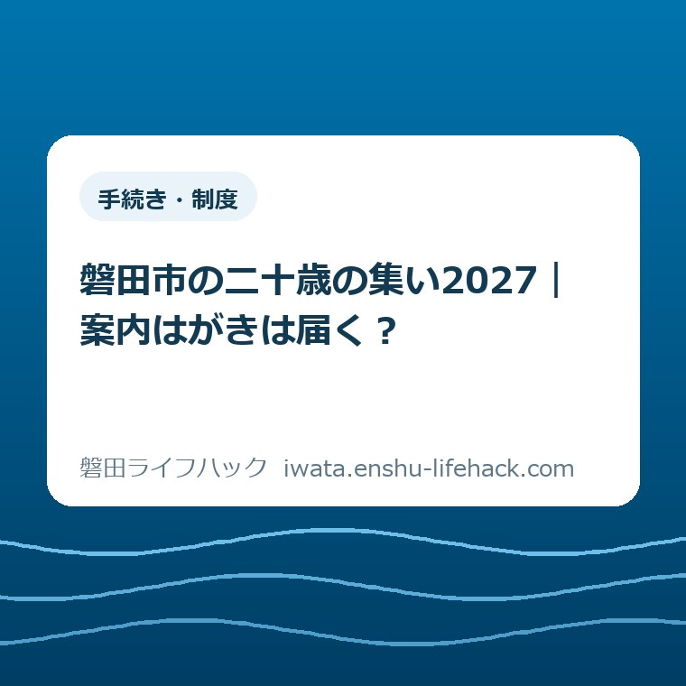

手続き・制度
磐田市の二十歳の集い2027｜案内はがきは届く？

この記事の要点
Q. 磐田市の二十歳の集い、案内はがきはいつ届く？
A. 磐田市の2027年「二十歳の集い」は、案内はがきを送りません。市公式LINEで情報発信し、同じ情報を市ホームページにも掲載します。市外へ転出した対象者も参加できます。対象や受付の最新条件は、本人が市公式ページで確認してください。
帰省の予定を考えながら、郵便を待っている方へ
磐田市の「二十歳の集い」は、対象者の生年月日や受付の案内を確認して参加を考える式典です。家族の付き添いや個別の事情まで、この記事で一律に判断することはできません。まず本人が対象に含まれるかを公式案内で確かめてください。この記事は2026年10月19日に確認した公表情報をもとに、案内はがきの有無を整理します。
地方就職学生支援金の記事でも扱ったように、学生の予定には学業や就職の区切りが重なります。学校や職場の予定を見ながら、磐田へ帰る日を考える。そのうえで家族に送迎を頼むなら、別の人の予定も必要になります。案内が来てから決めたいと思うのは自然なことです。すでに時間を使って調整している方に、調べ方が足りないと言うつもりはありません。
ただ、今回は郵便受けを確認し続けても、式典の案内は届きません。磐田市の公式FAQは、案内はがきの送付を行っていないと説明しています。ここははっきり切り分けられます。はがきを待つことと、式典に参加できるかを確かめることは、別の話です。
私は大石浩之（磐田市／不動産業）です。この記事では、LINEの操作手順ではなく、紙の案内を待っている間に見落としやすい情報の受け取り方を扱います。読み終えたら、本人が公式ページを一度開く。その一歩につながるように書きます。
公式FAQの答えは「案内はがきの送付なし」
磐田市公式「令和9年磐田市『二十歳の集い』」のFAQ質問1は、市公式LINEを活用して情報を発信するため、案内はがきは送付していないとしています。情報の入口が郵便から変わっていることを知れば、届かない理由を家族で推測する必要はなくなります。
同じFAQには、市公式LINEで事前登録をすると式典の情報を受け取ることができ、当日の受付も円滑になると記されています。事前登録については、本人が公式案内を確認するのが出発点です。このブログに個人情報を送っても、市への登録にはなりません。
市公式LINEで配信する情報は、市ホームページにも掲載すると説明されています。LINEの通知だけを探し続ける必要はありません。まず市の掲載内容を読み、登録や受付について分からないことが残ったら、市の担当窓口に確認する形で考えられます。
意外に感じる方もいると思いますが、「はがきが来ない」ことだけでは参加できない根拠になりません。市は郵送しない運用を案内しているからです。郵便の到着を参加資格の印のように捉えると、自分で対象から外れたと考えてしまうおそれがあります。

2027年の開催日と、本人が確かめる対象
磐田市が公表する開催日は2027年1月10日（日曜日）、式典の時間は午前11時から正午です。会場は磐田市民文化会館「かたりあ」。ホールの開場は午前10時と案内されています。開場と開式は同じ時刻ではないので、家族に予定を伝えるときは分けて書くと混乱を減らせます。
対象として記載されているのは、2006年4月2日から2007年4月1日までに生まれた方です。「2027年に20歳になる人」という言い換えだけでは、生年月日の範囲がずれます。自分や家族の誕生日を、市が示す始まりと終わりの日付に照らして確認してください。
この日程は式典そのものの案内です。着付け、写真撮影、友人との待ち合わせ、送迎の時間まで市が決めているわけではありません。私は、家族の予定表では式典の欄を先に置き、前後の予定は別の欄に書くのがよいと考えます。変更があったときに直す場所が見えやすくなります。
出席を考える本人が離れて暮らしているなら、家族が代わりにすべて決めようとしなくても大丈夫です。私は、まず市の公式ページのURLだけを共有し、本人が対象と日程を読んだかを確かめる形を勧めたい。服装や交通の結論を、同じ日にまとめて出す必要はありません。
磐田市外へ転出していても、はがきで判断しない
磐田市公式FAQ質問2では、以前磐田市に住み、現在は市外へ転出している方も式典に参加できると回答しています。市公式LINEの事前登録後に配信予定の情報を確認するよう案内されています。現在の住所が市外という理由だけで、参加を諦める話ではありません。
進学先や就職先へ住民票を移した方にとって、案内が実家に届くのか、今の住所へ届くのかは気になるところです。しかし、この式典ははがきを送らないと説明されています。郵便の転送先を考える前に、式典の公式情報の入口を本人に渡すほうが、今回の疑問には直接つながります。
市外転出者の参加ができるという説明と、個々の登録内容に間違いがないかは別に確認してください。この記事は、住所や本人確認に関する細かな扱いを追加で決めるものではありません。公式ページを読んでも自分の事情に当てはまるか分からない場合は、その事情を市へ伝えて確認します。
住民票や証明書など別の用事も帰省中に済ませたい方は、式典の確認と窓口の用事を分けて考えると整理できます。窓口の案内は磐田市の4支所窓口でできることにまとめています。式典への参加条件を支所の一般案内だけで判断せず、まなび推進課の式典ページを見てください。
良い点――本人にも離れて暮らす家族にも入口がある
磐田市が案内する情報提供には、市公式LINEと市ホームページの両方があります。LINEで配信する内容をホームページでも掲載すると明記されている点は、情報を確認する場所を決める手掛かりになります。どちらの画面を見ているかが違っても、市の説明へ戻れる入口があります。
私は、この入口が二つある点を良いと考えます。本人はスマートフォンで確認し、家族は市のページで日程を見る。そうした役割分担を考えやすくなるからです。同じ通知サービスを家族全員が使うことを、帰省相談の前提にしなくて済みます。
地域の情報が紙だけで届くと思っていると、電子で出ている案内を見落とすことがあります。紙と電子の情報の受け取り方については、磐田市の電子回覧板とはでも扱いました。電子回覧板と式典のLINE登録は別の仕組みですが、情報の入口を確かめるという考え方は共通します。
私は、紙がなくなることだけを便利さの証拠にはしません。受け取る側が、自分の必要な情報にたどり着けて初めて助けになります。今回の案内なら、「はがきは送らない」「ホームページにも掲載する」という説明が、待つ時間を確認する時間へ変える手掛かりになります。
注文したい点――通知と受付を一緒に思い込まない
市公式FAQでは、LINEで情報を受け取れることと、当日の受付が円滑になることを案内しています。一方、ホームページで情報を読めるという説明だけで、登録や当日の受付の個別条件まで分かるとは限りません。通知を見ることと、受付についての確認は、混ぜずに読みたいところです。
私が注文したいのは、LINEを使い慣れない本人や家族にも、次に確認する先がすぐ見える案内です。「ホームページにも載る」と読んで安心したあと、受付について何を確かめればよいか迷う人がいるかもしれません。これは利用者を責める話ではなく、説明のつながりについての私の意見です。
私にも迷いがあります。通知が届く形は予定を忘れにくくする助けになりますが、本人の登録内容を家族が把握しすぎる必要はありません。どこまで一緒に確認するかは家庭ごとに違います。私は、家族が登録を済ませたつもりになるより、本人が公式案内を読めたかを確かめるところから始めたいと考えます。
スマートフォンの利用事情や、案内を読んでも解決しない個別の事情がある場合は、市へ相談してください。確認できていない受付方法を、このブログで「これで入れる」と補うことはしません。担当課へ伝える際は、日程の質問なのか、対象の質問なのか、受付の質問なのかを一つに絞ると話を始めやすくなります。
対案・結論――今日の一歩は公式ページを本人に渡す
案内はがきを待っている家族が今日できる一歩は、2027年の式典の公式ページを本人へ共有することです。すでに本人がページを見ているなら、家族が同じURLを保存すれば足ります。登録画面の操作や帰省の予約まで、今日中に終えるという宿題にはしません。
共有する言葉も短くて構いません。「磐田の二十歳の集いは、はがきを送らないそうです。対象と日程を公式ページで見ておいてください」。私は、このくらいの伝え方がよいと考えます。返信で細かな予定を全部求めず、まず情報が届いた状態をつくるためです。
公式ページは令和9年磐田市「二十歳の集い」です。年度を取り違えないよう、ページの見出しに令和9年とあることを確認します。検索画面に以前の式典が出ても、そのまま今年度の条件として使わないようにしてください。
市公式の二十歳の集い一覧には、年ごとの案内への入口があります。検索結果から開いたページが対象の回か迷ったときに戻れる場所です。この記事の日付と開催年も異なります。2026年10月19日に、2027年1月の式典について書いています。

家族の予定表には、分かったことと未定を分けて書く
2027年の式典について家族で記録するなら、市が公表した開催日・開式時刻・会場と、家庭でまだ決めていない予定を分けて書く方法があります。これは市が求める提出書類ではなく、私が提案する家庭内のメモです。式典の案内を見た日も添えると、あとで更新の有無を確かめやすくなります。
例えば、「市の案内は2026年10月19日に確認」「帰省の便は未定」「送迎を頼むかは本人と相談」といった書き分けです。未定の欄が残っていても、その日にすべて埋めなくて構いません。公表情報と家族の希望を同じ欄へ書くと、希望が確定事項のように伝わることがあります。
予約を伴う予定を考える場合は、それぞれの相手先の条件を別に確認してください。式典の公式日程が分かることと、交通や撮影の予約を変更できることは別です。この記事では個別の予約条件や費用は確認していません。市の案内だけから、家族の支出や契約について判断しないでください。
市のページを開く作業を誰が担うか決まったら、家族全員で同じことを繰り返し調べなくても済みます。私は、情報を集める人数を増やすより、同じ公式ページを見ることを先に勧めたい。本人の希望を聞く時間を残すためにも、確認の出発点をそろえておく意味があります。
大石の視点――家族の段取りを増やさない案内にしたい
私は、制度や行事の案内を読むとき、「それで誰がいつ動くのか」を先に考えます。不動産の仕事をしている立場からも、家族の予定を調整する時間は軽く扱いたくありません。これは特定の相談者の体験談ではなく、今回の公表情報を読んだ私の考えです。
一言で言えば、届かないはがきを待つ時間は減らしてよい、ということです。本人が対象と日程を確認できれば、そのあと出席するかを考える材料が一つ増えます。式典へ出る結論を家族が先回りして決める必要はありません。情報を届けることと、本人の選択を急がせることは分けておきたいと思います。
紙の案内がないことを知らなかった人も、すでに調べていた人も、今日の出発点は同じ公式ページで構いません。確認する項目を増やし続ける記事にはしたくありません。本人へURLを渡す、または本人が一度開く。まずはその一つで十分です。
本記事は磐田市の公式案内ではありません。対象や受付の扱い、掲載内容は変わる場合があります。掲載時点で判断できない個別の事情は、市のまなび推進課へ確認してください。最後は必ず、磐田市公式ページの最新情報で確認をお願いします。
よくある質問
案内はがきが来ないと参加できませんか？
磐田市は2027年の二十歳の集いの案内はがきを送付しないと説明しています。はがきが来ないことだけで、参加できないとは判断できません。対象は2006年4月2日～2007年4月1日生まれの方です。対象や受付の最新案内を、本人が市公式ページで確認してください。
磐田市外へ転出していても参加できますか？
市公式FAQでは、以前磐田市に住み、現在は市外へ転出している方も参加できると回答しています。事前登録後に配信予定の情報を確認するよう案内されています。現在の住所だけで参加を諦めず、本人の事情に関して不明な点があれば、まなび推進課へ確認してください。
LINE以外でも式典の情報を読めますか？
磐田市は、市公式LINEで配信する情報を市ホームページにも掲載すると案内しています。情報の閲覧と、登録や当日の受付の扱いは分けて確認してください。LINEの利用事情などで分からないことが残る場合は、公式ページの担当窓口へ問い合わせてください。
参考にした公式情報
- 令和9年磐田市「二十歳の集い」／磐田市（2026年10月19日確認）
- 二十歳の集い一覧／磐田市（2026年10月19日確認）
最終確認日：2026-10-19 ／ 本記事は公表情報と執筆者の見解を分けて記載しています。制度・数値・公開状況は変更される場合があるため、最新情報は磐田市公式ページでご確認ください。